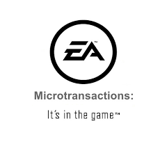

Due to a lack of time and motivation we will not be able to release the update below so instead our next update will include another 50+ games added to the website as well as the permire of our youtube channel adding a new tab to the website for lets play videos that in the next next update we hope to also allow anyone on the website post their own videos either as a video comment of them playing a game on the site or a video of them playing any game(within reason) posted on our lets play/video tab for your enjoyment. We will eventually feature some videos that our staff enjoys and organize the videos so that you can find any video more eassily. Thank you for your patciencs and get ready for 1.0.2
Holy poop on a cracker is our next update big or what. First and most importantly we will be adding a comments section but not just that we will be adding a second comment section for lets play videos. Play one of our games and comment your video or play any game and add your video to our lets play library tab. The first website where anyone can find a database of lets play videos and tutorials for any game and in later updates we will even automatically sort them and make it so you can search for them or your favorite artist. Wait did we say your favorite artist how is that possible End_Game you might ask well if so dumb question. We are creating a account system now when you send us a game your artist profile will show all your games. People can follow you with our new follow button called e-stalk. We will try to create a full list of benifits for our new premium accounts which allow you to get certian games one day earliy which is not a grab for money these games are beta for that day and all those with access will be asked to send us a note of any bugs they find. For all the games that are not able to be played online great news we are even adding in a tab for games that you can download that dont worry we have extensivly checked for any bs viruses and the like. Get ready to welcome the best update ever 1.0.3 NOTE: this update will take much longer than the others due to the complicated, time consuming, and overall size of this update we will try to stay on schedual.
